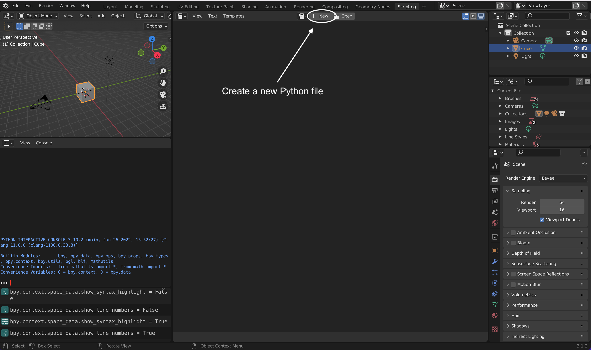

Developer’s Guide¶
We welcome everyone who is interested in creating 3D models of biological stem cells on Blender!
The developer’s guide is to help contributors on how to start working and contributing on Goo. If you are interested in join, please contact Sean Megason on his email address. sean.megason(AT)hms.harvard.edu.
Git/Github¶
The first thing you need to do is to fork Goo repository and then clone the forked repository into your local machine. This Will give you the freedom to test and make changes to the project without affecting the original repository.
Make sure you have git installed on your local machine. If you do not have it install on your system, refer to this guide: https://github.com/git-guides/install-git
Fork & clone¶
If you are new to Git/Github, here is detailed info on how to fork and clone a repository from Github: https://docs.github.com/en/get-started/quickstart/fork-a-repo
Blender¶
Blender is an open source 3D computer software. It is free to download. Blender has a huge community and contributors all over the world. You may find Python API for Blender very useful.
Once you have downloaded and installed Blender, launch Blender and select General for the new file. Scripting tab allows you to interact with Blender using Python language. By clicking scripting, a list of windows will open:
3D Viewport allows you to interact with 3D objects.
Python Interactive Console allows you to interact with Blender using Python language.
Info Console Menu or Report console creates a log in Python of the executed actions on Blender. In another words, it translates the clicks you made in Blender into code. This is very useful especially when you try to automate procedures of actions on scripting.
{kind=link}
Creating Python File¶
You can create a Python file and run it on Blender. Once you are in Scripting tab, click on the + New icon.
{kind=link}
- bpy is a Blender API that allow to interact with Blender through Python language. To import Blender API, you write the following::
import bpy
The Blender API can used with no installation nor importing into the Python Interactive Console. The Python file can be run on Blender by clicking on play icon.

Viewing Python Error Messages¶
PC: Window -> Toggle System Console
Mac: Finder -> Applications -> right-click on Blender -> Show Package Content -> Contents -> MacOS -> right-click on Blender -> Make Alias. Blender will be launched by double-clicking the Blender alias and any error messages will display on the alias window. You can store the alia any folder.
Useful Blender Tips¶
To Display Line Numbers on a Python file, click View and mark the checkbox of Line Numbers. View tab will appear once you create a Python file.
To turn on Highlight Line at the line currently at, click View and mark the checkbox of Highlight Line. View tab will appear once you create a Python file.
Developer Extras allows users to examine Python codes on any features or buttons on Blender by right-clicking for example on a Render button and then select Edit Source. To enable this Developer Extras, go to Edit -> Preferences -> Interface -> check Developer Extras
Python Tooltips also allows users to examine the Python codes behind any bulit-in Blender features by just hovering the mouse on top and a pops-up window will appear. To enable Python Tooltips, Edit -> Preferences -> Interface -> Check Python Tooltips